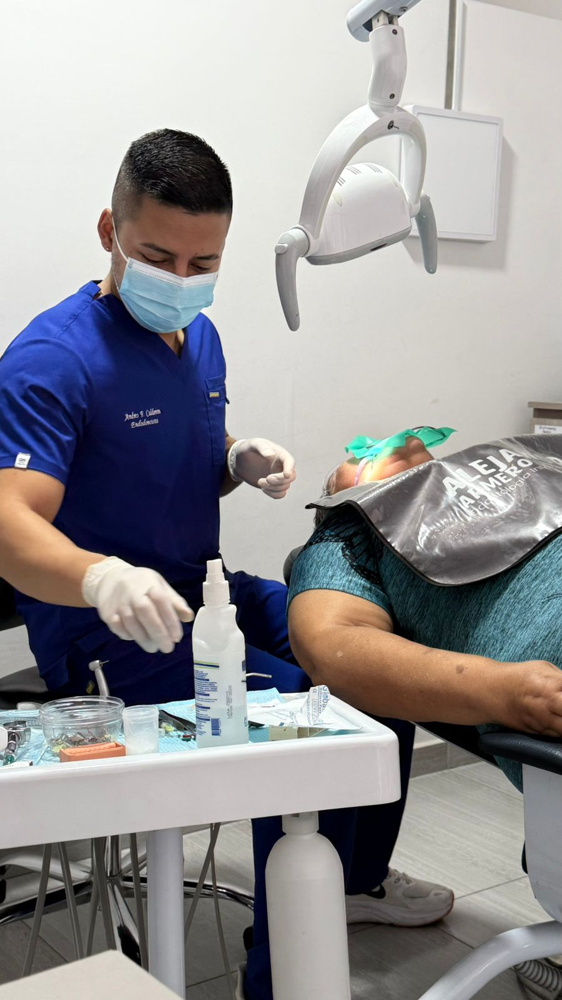

Intervención experta para suprimir molestia, contener infecciones intrincadas dentales y retener piezas que de lo contrario desaparecerían, proporcionándote comodidad y capacidad para masticar.

Contamos con un endodoncista altamente capacitado, dedicado a preservar tus dientes mediante técnicas avanzadas de tratamiento de conductos.
Constituye un procedimiento realizado adentro de la pieza para extraer el tejido pulpar inflamado o contaminado, purificar los canales radicales, desinfectarlos y cerrarlos de manera estanca para preservar el elemento.
El propósito cardinal es esquivar la exodoncia, manteniendo tu elemento original y su misión dentro del conjunto dentario.
La terapia pulpar se ejecuta con herramientas especializadas, detectores apicales y procedimientos actuales para incrementar exactitud y probabilidad de éxito.
Posterior a la terapia de canales, la pieza se robustece mediante reconstrucciones o cubiertas para asegurar su solidez prolongada.
Escenarios donde el tejido pulpar está afectado y demanda terapia de conductos.
Si la caries accede profundamente o compromete el nervio, generando molestia severa o proceso infeccioso.
Dolores intensos que surgen sin causa aparente o se agravan nocturno mente usualmente señalan compromiso pulpar avanzado.
Si la molestia subsiste prolongadamente tras el agente irritante, puede indicar inflamación irreparable del nervio.
Tras un evento traumático, el nervio puede lesionarse, la pieza modificar tonalidad o generarsíntomas, precisando terapia pulpar.
Aparición de inflamaciones, hinchazón o lesiones gingivales contiguas a una pieza habitualmente denotan contaminación radicular.
Piezas con devastación coronaria importante que necesitan cubiertas o refuerzos frecuentemente demandan terapia pulpar anticipada.
Un protoc olo metódico orientado a extirpar la contaminación y rescatar la pieza.
Comprende recopilación de antecedentes, exámenes de reactividad, golpeteo, palpación e imágenes radiológicas para verificar la necesidad de terapia pulpar.
Se posiciona aislamiento de látex para laborar en ambiente libre de contaminación y se ingresa a la cavidad pulpar para detectar los canales.
Se trabajan los conductos mediante limas y se lavan con agentes antimicrobianos para suprimir microorganismos y materia destruida.
Tras la descontaminación, los conductos se rellenan con sustancias idóneas que obturan el interior de la raíz de forma impermeable.
La pieza se reconstruye mediante resinas, inserciones o cubiertas para recuperar morfología, desempeño y resistencia frente a rotura.
Articulamos la terapia pulpar con otros campos para obtener un desenlace que sea tanto funcional como hermoso.
Prostodoncia (cubiertas y reconstrucciones subsecuentes)
Periodoncia (condición gingival y apoyo óseo)
Ortodoncia (regulación de vacíos y presiones sobre piezas intervenidas)
Cirugía Oral (reterapias difíciles o microquirurgia de la raíz)
Endodoncia (especialista rector en administración de conductos)
ATM y Oclusión (reglajes de cierre posterior a la intervención)
El endodoncista ostenta la responsabilidad de intervenir el interior de la pieza: evalúa la condición pulpar, ejecuta la terapia canalicular mediante metodologías sofisticadas y colabora estrechamente con el prostodoncista para que la pieza esté preparada para su rehabilitación conclusiva.
Una evaluación exacta facilita determinar si la pieza es rescatable y qué opción es la más favorable.
Capturamos imágenes del sector comprometido, reconstrucciones previas y variaciones cromáticas para archivar la situación y su avance.
Realizamos imágenes radiológicas apicales y, si es conveniente, investigaciones complementarias para valorar raíces, magnitud de conductos y existencia de daños.
Evaluamos obturaciones, fundas o dentaduras vigentes para precisar si demandan reemplazo o modificación posterior a la terapia pulpar.
Efectuamos exámenes de temperatura y eléctricos para estimar la situación nerviosa y distinguir entre inflamación recuperable y no recuperable.
Examinamos el desempeño de la pieza al cerrar y masticar, así como la aparición de molestia al golpeteo o contacto.
Consideramos tu bienestar integral, fármacos, historial de molestia e intervenciones anteriores para estructurar el procedimiento de manera segura.
De acuerdo con la situación de la pieza, articulamos la terapia pulpar con variados modelos de rehabilitación.
Insertables óseos cuando la pieza no resulta rescatable
Fundas para fortalecer piezas con pérdida importante de materia
Dentaduras sobre piezas intervenidas o sobre insertables óseos
Inserciones y rehabilitaciones hermosas posteriores a la terapia pulpar
Alineación para equilibrar cargas sobre piezas intervenidas
Recuperación ósea en regiones con déficit de hueso por contaminación prolongada
Ventajas de seleccionar la terapia pulpar para rescatar tus piezas.
Mediante la extirpación del tejido dañado o contaminado, la molestia severa disminuye y se extingue gradualmente post intervención.
Facilita preservar el elemento original en tu cavidad bucal, previniendo exodoncias e intervenciones más complicadas para sustituirla.
La limpieza de los conductos contribuye a suprimir bacterias y obstruir que el daño avance hacia estructuras óseas y tejidos adyacentes.
Logras reanudar la masticación sin inconvenientes, conciliar el sueño sin dolencias y reincorporarte a tareas cotidianas sin incomodidades persistentes.
Obstaculiza la difusión de la contaminación, minimizando la posibilidad de acúmulos purulentos, inflamaciones o merma ósea periférica.
Mediante el resguardo de la pieza y su rehabilitación apropiada, se mantiene el equilibrio de tu sonrisa y la firmeza de tu cierre.
El éxito duradero también se fundamenta en el cuidado y evaluaciones subsecuentes.
Evaluaciones ordenadas con imágenes radiológicas para monitorear la cicatrización
Limpieza bucal esmerada para prevenir nuevos procesos cariosos en la pieza intervenida
Aplicación de dispositivos protectores en supuestos de rechinar para evitar fracturas
Reparaciones o reglajes de reconstrucciones o cubiertas si lo requiera
Anotación y vigilancia de la pieza en tu expediente médico
Acompañamiento perpetuo para despejar incógnitas y evaluar molestias novedosas
La terapia pulpar constituye una inversión para resguardar tus elementos originales. Finalizar la rehabilitación conclusiva y acudir a las evaluaciones sugeridas es esencial para que la pieza intervenida funcione adecuadamente durante prolongados tiempos.
Reserva una evaluación de terapia pulpar en Cali para precisar si requieres intervención canalicular y descubrir la alternativa óptima para rescatar tu pieza.
Agendar Valoración de EndodonciaRecibimos enfermos con molestia bucal y contaminaciones desde nuestro espacio en Santa Mónica Popular, Cali.
Nos localizas en el sector sur de Cali, en Santa Mónica Popular, para tu evaluación e intervención de terapia pulpar.
Dirección: Cra 24a#33b132. 2do piso, Santa Mónica Popular, Cali, Valle del Cauca
Teléfono: 304 3931909